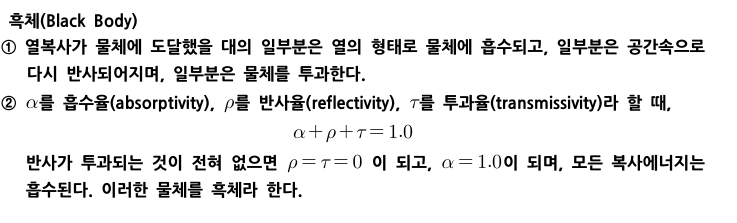
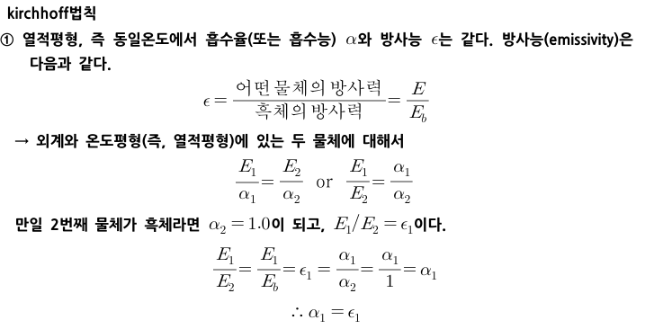
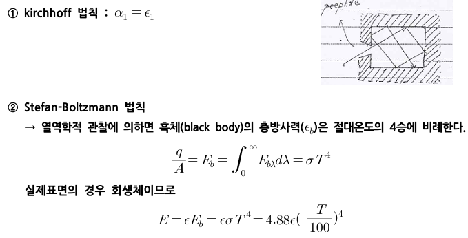
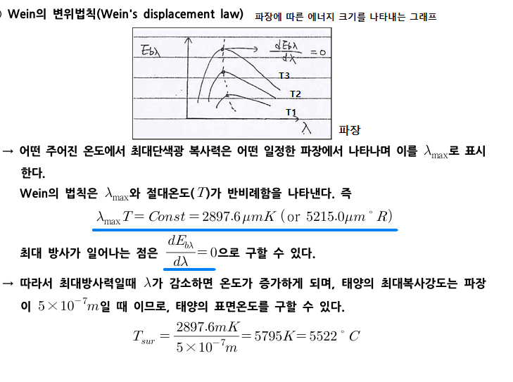
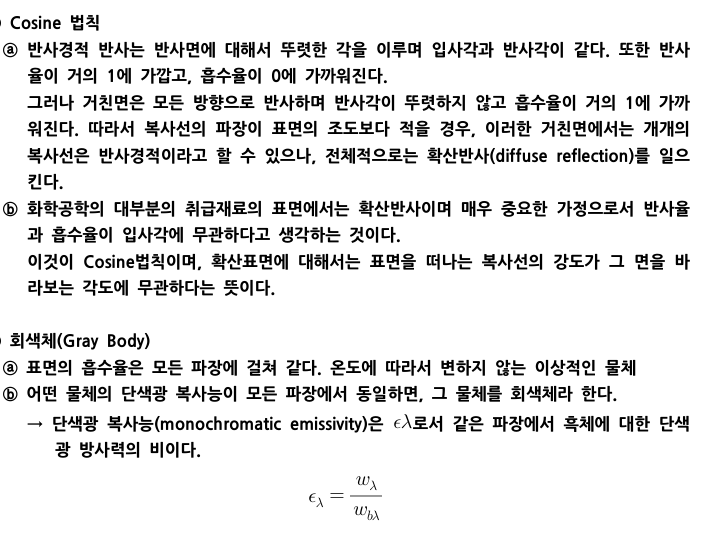
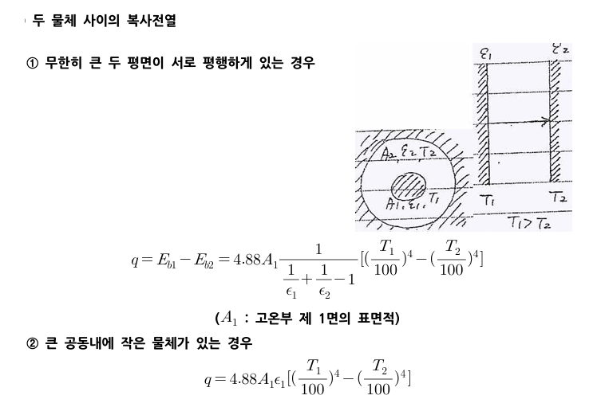
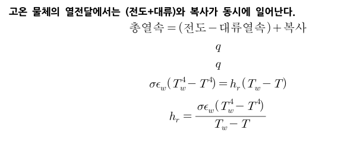
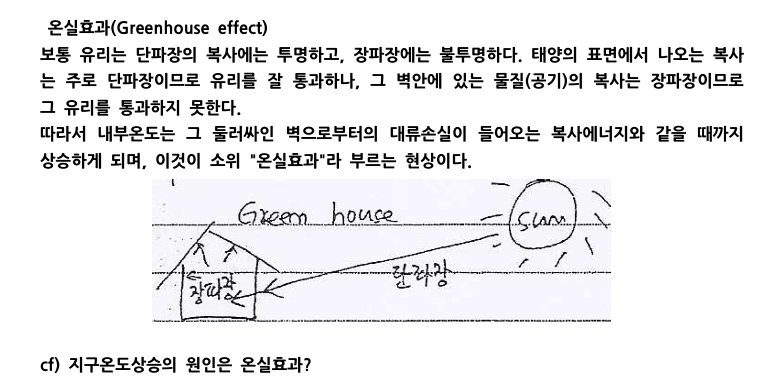
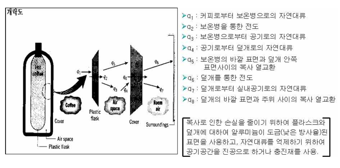

복사
1)흑체

열복사가 물체에 도달했을 때, 일부분은 흡수되고 일부분은 공간속으로 반사되어지고 일부는 물체를 투과한다. 이때 흡수율+반사율+투과율을 합치면 100%가 되는데, 만약 반사와 투과가 없다면 모든 열에너지는 흡수된다. 이를 흑체라고 한다. 반사가 없기 때문에 검은색으로 보이는 것이다.
2)열적 평형에 대해서

열적 평형이라는 건, 주고받는 것이 같다는 뜻이다. 키르히호프의 법칙에서 ∈는 방사(빛을 방출시키는 것)에 관한 인자이다. 예를 들어 철을 생각해보자. 철을 가열하면 색이 빨간색으로 달궈진다. 이는 에너지를 빛으로 방사시키는 것으로 볼 수 있다. 이를 방사력이라고 한다. 특정 물체의 방사력을 흑체의 방사력으로 비교한 것이 방사능이다.
흑체는 방사능이 1이고, 흡수능a도 1이다. 왜냐면 흡수능=방사능이라고 보기 때문이다. 이를 키르히호프의 법칙이라고 한다.
이제 복사의 여러 법칙들을 알아보도록 하자.

-키르히호프 법칙은 이미 알고 있듯이 열적평형 상태에서 흡수능과 방사능은 같다는 것이다. 그래야만 받는 만큼 내보내면서 열평형이 유지된다.
-스테판 볼츠만 법칙은 회백체의 총방사력을 알려주는 식이다.
 
이제 두 물체 사이에 복사전열이 일어나는 경우를 살펴보도록 하자.

이 때는 두 벽의 엡실론 값을 알아야 계산할 수 있다. 이때 면적의 경우 고온부의 면적을 사용한다.
다음으로 복사전열계수를 살펴보자.

이번엔 복사의 예시로 온실효과를 살펴볼 것이다.

지구는 저온이고, 에너지가 작은 적외선 파장을 내보낸다. 그러나 온실기체라고 불리는 가스들은 적외선을 잘 흡수하므로, 열 방출이 잘 안되어 지구온난화가 발생한다.
이것과 비슷한 현상이 유리로 인한 온실효과로, 밖에서 들어오는 에너지가 높은 단파장 복사는 유리가 쉽게 투과시키고, 반면 내부에서 복사되는 장파장은 다시 실내에 갇히게 된다. 이것은 온실효과라고 불린다.
이제 전도,대류,복사 실제 메카니즘을 보온병 예시로 총정리하며 마무리해보자.

뜨거운 커피로 가득찬 보온병이 있다고 해보자. 이때 커피는 보온병의 벽면으로 자연대류를 하며 열을 보내고, 이 열은 보온병을 타고 전도가 된 후 보온병의 외부에서 공기로 자연대류하게 된다.
반면 내부 공기는 덮개로 자연대류하고 바깥표면과 덮개 안쪽으로 복사 열교환을 하게 된다.
이런 모든 상황을 고려해보면, 열전달은 전도와 대류와 복사가 함께 일어나 만들어짐을 알 수 있다.